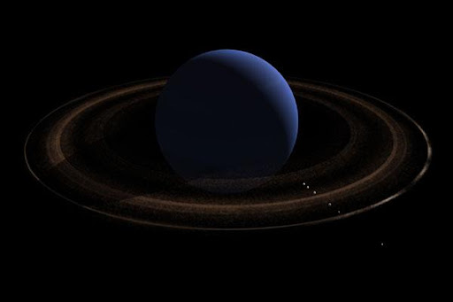

Neptūno atmosfera susideda iš vandenilio,
helio, metano, amoniako. Paviršių nuolatos dengia debesys, vėjų
greitis atmosferoje siekia iki 400–700 m/s. Atmosferos geometrinis
albedas 50 %. Neptūno temperatūra 38 K (-235.15 pagal Celsijų).
Paviršių veikiausiai dengia plonas amoniako ir metano vandenynas.
Po juo yra ~3500 km storio vandens, amoniako ir metano ledų
sluoksnis, centre ~20 500 km spindulio tų pačių ledų ir silikatų
branduolys.Apskaičiuota, kad jo atmosferos temperatūra lygi -210
°C. Neptūnas – tolimiausia Saulės sistemos planeta. Planeta
išskirstoma į tris charakteristikas:
- Orbitinė
- Vid. atstumas nuo Saulės – 4 498 252 900
km

- Perihelis – 4459 631 496 km
- Afelis – 4536 874 325 km
- Sinodinis periodas – 367,49 d.
- Greitis orbitoje, km/s – mažiausias
5,385; vidutiniškas 5,432; didžiausias 5,479
- Fizinės
- Pusiaujo skersmuo – 49 528 km
- Paviršiaus plotas – 7,619×109 kv.km
- Tūris – 6,254×1013 kub.km
- Masė – 1,0243×1026 kg
- Vidutinis tankis – 1,638 g/cm³
- Laisvojo kritimo pagreitis – 11,15 m/s²
- Pusiaujinis sukimosi greitis – 9660 km/h
- Palydovų skaičius – 14
- Atmosferos
- Sudėtis
- Vandenilis (H2) – 80 %±3,2
%
- Helis (He) – 19 %±3,2 %
- Metanas (CH4) – 1,5 %±0,5 %
- Deuteris (sunkusis vandenilis, ²H, HD)
– 0,000192 %
- Etanas (C2H6) –
0,0000015 %
© Matas Radioniovas